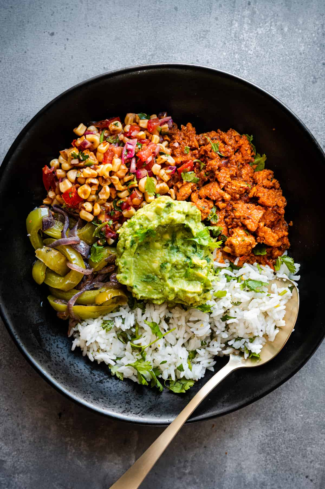

Burrito bowls are a very versatile dish in that you can mix and match a variety of seperate components to create the dish that satisfies your cravings. Burrito bowls will typically contain a variation of mexican rice, some kind of protein prepared with traditionally spanish spices/ingredients, as well as beans, sauteed fajita veggies,etc.